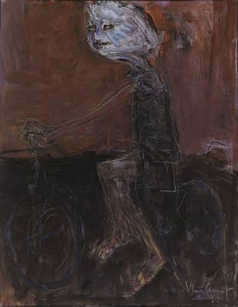
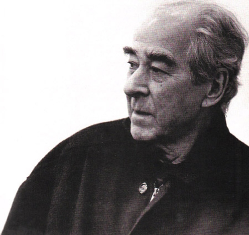
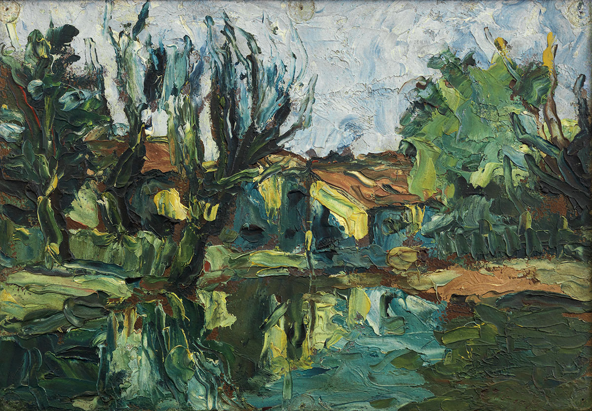

.jpg)
Carretéis
ARTISTA EM DESTAQUE
Memória, movimento e intensidade
Iberê Camargo (1914–1994) foi um dos grandes artistas brasileiros do século XX. Nascido no Rio Grande do Sul, trabalhou com pintura, desenho e gravura. Sua produção passou por diferentes fases, com pinceladas densas, cores fortes e imagens que exploram memória, solidão, movimento e a experiência humana.
Ver outras obras ↓
Ciclistas
Obra em destaque
LEITURA DA OBRA
Na série dos ciclistas, as figuras e bicicletas parecem se misturar em um movimento intenso. As pinceladas carregadas e as formas simplificadas não procuram registrar cada detalhe com precisão: elas transmitem energia, tensão e a sensação de movimento.
CONHEÇA QUEM CRIOU
Iberê Camargo (1914–1994) foi um dos grandes artistas brasileiros do século XX. Nascido no Rio Grande do Sul, trabalhou com pintura, desenho e gravura. Sua produção passou por diferentes fases, com pinceladas densas, cores fortes e imagens que exploram memória, solidão, movimento e a experiência humana.

MAIS PARA EXPLORAR
Carretéis
.jpg)
Fantasmagoria

Território das Águas